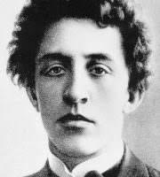

Aleksandr Blok (1880-1920)
- Major themes - eternal feminine, superior wisdom that only poet can understand
- Poetic symbol is bridge between illusory, banal world and ideal metaphysical light
- Petersburg poet - in tradition of Gogol, Dostoevsky, Bely; explores spaces of city pre-revolution and during revolution; "Twelve" (1918) is set in St. Petersburg
- Major Symbolist poet
